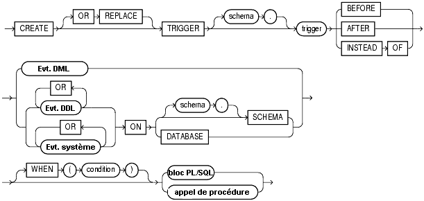
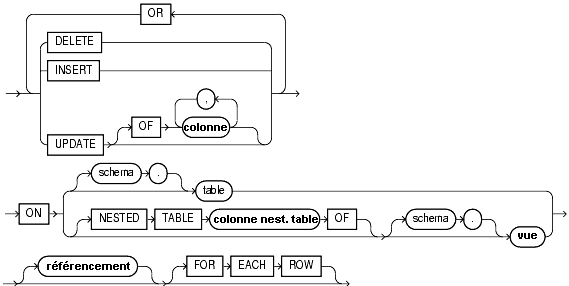

Oracle PL/SQL
Date de publication : Avril 2004 ,
Date de mise a jour : Juillet 2004
6. Les déclencheurs
6.1. Les déclencheurs sur TABLE
6.2. Les déclencheurs sur VUE
6.3. Les déclencheurs sur évènements système ou utilisateur
6.3.1. Les attributs
6.3.2. Les évènements système
6.3.3. Les évènements utilisateur
6.4. Maintenance des déclencheurs
6. Les déclencheurs
Un déclencheur est un bloc PL/SQL associé à une vue ou une table, qui s'exécutera lorsqu'une instruction du langage
de manipulation de données (DML) sera exécutée
L'avantage principal du déclencheur réside dans le fait que le code est centralisé dans la base de données, et se déclenchera quel que soit l'outil utilisé pour mettre à jour ces données,
donnant ainsi l'assurance qu'une utilisation d'un ordre DML depuis Sql*Plus, Forms ou n'importe quelle application tierce procurera un résultat identique sur les données
l'inconvénient principal du déclencheur réside dans le fait que son exécution utilise des ressources qui peuvent augmenter sensiblement les temps de traitement, notamment lors de modifications massives apportées sur une table
Un déclencheur s'exécute dans le cadre d'une transaction. Il ne peut donc pas contenir d'instruction COMMIT ou ROLLBACK ou toute instruction générant une fin de transaction implicite (ordre DDL)
Les ordres SQL (SELECT, INSERT, UPDATE, DELETE) contenus dans le bloc PL/SQL et qui se référent à la table sur laquelle s'exécute le déclencheur peuvent générer l'exception ORA-04091 TABLE IS MUTATING
(pour une explication détaillée du problème des tables en mutation, référez-vous à l'article Résolution du problème de la table mutante (ora-04091) par Pomalaix
Le bloc PL/SQL qui constitue le trigger peut être exécuté avant ou après la vérification des contraintes d'intégrité
Il peut être exécuté pour chaque ligne affectée par l'ordre DML ou bien une seule fois pour la commande
Seules les colonnes de la ligne en cours de modification sont accessibles par l'intermédiaire de 2 variables de type enregistrement OLD et NEW
OLD représente la valeur avant modification
OLD n'est renseignée que pour les ordres DELETE et UPDATE. Elle n'a aucune signification pour un ordre INSERT, puisqu'aucune ancienne valeur n'existe
NEW représente la nouvelle valeur
NEW n'est renseignée que pour les ordres INSERT et UPDATE. Elle n'a aucune signification pour un ordre DELETE, puisqu'aucune nouvelle valeur n'existe
Ces deux variables peuvent être utilisées dans la clause WHEN du déclencheur et dans la section exécutable
Dans cette section, elle doivent être préfixées comme des variables hôtes avec l'opérateur :
Les noms de ces deux variables sont fixés par défaut, mais il est possible de les modifier en précisant les nouveaux noms dans la clause REFERENCING
REFERENCING OLD AS nouveau_nom NEW AS nouveau_nom


Evt. DML représente l'évènement INSERT ou UPDATE ou DELETE
Evt. DDL représente un évènement utilisateur
Evt. système représente un évènement système
colonne nest. table représente le nom d'une colonne de table imbriquée
référencement représente le renommage des valeurs OLD et NEW
Dans le cas d'un déclencheur BEFORE UPDATE ou AFTER UPDATE, la clause OF peut être ajoutée après le mot clé UPDATE pour spécifier la liste des colonnes modifiées.
Cela permet de restreindre l'activation du déclencheurs sur les seules colonnes visées.
Le mot clé WHEN(condition) permet également de restreindre le champs d'activation du déclencheur en ajoutant une clause restrictive
6.1. Les déclencheurs sur TABLE
Créons un déclencheur très basique qui ne fait qu'afficher le numéro et le nom d'un employé que l'on veut supprimer de la table EMP
SQL> CREATE OR REPLACE TRIGGER TRG_BDR_EMP
2 BEFORE DELETE
3 ON EMP
4 FOR EACH ROW
5 Declare
6 LC$Chaine VARCHAR2(100);
7 Begin
8 dbms_output.put_line( 'Suppression de l''employé n° ' || To_char( :OLD.empno )
9 || ' -> ' || :OLD.ename ) ;
10 End ;
11 /
Déclencheur créé.
Supprimons maintenant un employé
SQL> set serveroutput on
SQL> delete from emp where empno = 7369
2 /
Suppression de l'employé n° 7369 -> SMITH
1 ligne supprimée.
SQL> rollback;
Annulation (rollback) effectuée.
La DRH annonce que désormais, tout nouvel employé devra avoir un numéro supérieur ou égal à 10000
Il faut donc interdire toute insertion qui ne reflète pas cette nouvelle directive
SQL> CREATE OR REPLACE TRIGGER TRG_BIR_EMP
2 BEFORE INSERT
3 ON EMP
4 FOR EACH ROW
5 Begin
6 If :NEW.empno < 10000 Then
7 RAISE_APPLICATION_ERROR ( -20010, 'Numéro employé inférieur à 10000' ) ;
8 End if ;
9 End ;
10 /
Déclencheur créé.
Tentons d'insérer un nouvel employé avec le numéro 9999
SQL> insert into emp (empno, ename, job) values( 9999, 'Burger', 'CLERK' ) ;
insert into emp (empno, ename, job) values( 9999, 'Burger', 'CLERK' )
*
ERREUR à la ligne 1 :
ORA-20010: Numéro employé inférieur à 10000
ORA-06512: à "SCOTT.TRG_BIR_EMP", ligne 3
ORA-04088: erreur lors d'exécution du déclencheur 'SCOTT.TRG_BIR_EMP'
L'ordre d'insertion est rejeté
Il est possible de gérer dans le même déclencheur des ordres DML différents en combinant les termes de la clause BEFORE avec le mot clé OR
SQL> CREATE OR REPLACE TRIGGER TRG_BIUDR_EMP
2 BEFORE INSERT OR UPDATE OR DELETE
3 ON EMP
4 FOR EACH ROW
5 Begin
6 If INSERTING Then
7 dbms_output.put_line( 'Insertion dans la table EMP' ) ;
8 End if ;
9 If UPDATING Then
10 dbms_output.put_line( 'Mise à jour de la table EMP' ) ;
11 End if ;
12 If DELETING Then
13 dbms_output.put_line( 'Suppression dans la table EMP' ) ;
14 End if ;
15 End ;
16 /
Déclencheur créé.
SQL> DROP TRIGGER TRG_BIR_EMP ;
Déclencheur supprimé.
SQL> insert into emp (empno, ename, job) values( 9993, 'Burger', 'CLERK') ;
Insertion dans la table EMP
1 ligne créée.
SQL> update emp set sal = 5000 where empno = 9993 ;
Mise à jour de la table EMP
1 ligne mise à jour.
SQL> delete from emp where empno = 9993 ;
Suppression dans la table EMP
Suppression de l'employé n° 9993 -> Burger
1 ligne supprimée.
SQL> rollback;
Annulation (rollback) effectuée.
Notez au passage que dans l'exemple de la suppression, les deux déclencheurs de type BEFORE DELETE ont été exécutés
6.2. Les déclencheurs sur VUE
La syntaxe d'un déclencheur sur vue est identique à celle du déclencheur sur table, à la différence que la clause INSTEAD OF est ajoutée
Ce type de déclencheur est particulier dans la mesure ou son exécution remplace celle de la commande DML à laquelle il est associé
Ce type de déclencheur n'est définissable que sur les vues et lui seul peut être mis en place sur les vues
Nous mettons à la disposition de certains utilisateurs une vue permettant de sélectionner les employés qui ont le job CLERK
SQL> CREATE OR REPLACE VIEW VW_EMP_CLERK AS
2 Select empno "Numéro", ename "Nom", deptno "Dept.", sal "Salaire"
3 From EMP
4 Where JOB = 'CLERK';
Vue créée.
SQL> select * from VW_EMP_CLERK ;
Numéro Nom Dept. Salaire
7369 SMITH 20 880
7876 ADAMS 20 1210
7900 JAMES 30 1045
7934 MILLER 10 1430
9991 Dupontont
9992 Duboudin
6 ligne(s) sélectionnée(s).
A travers cette vue, ces utilisateurs peuvent insérer des lignes
SQL> Insert into VW_EMP_CLERK values( 9994, 'Schmoll', 20, 2500 ) ;
Insertion dans la table EMP
1 ligne créée.
Cependant, ils ne peuvent pas voir leurs insertions car la colonne job (inutile dans ce cas) ne fait pas partie de la vue et donc de l'insertion !
SQL> select * from VW_EMP_CLERK ;
Numéro Nom Dept. Salaire
7369 SMITH 20 880
7876 ADAMS 20 1210
7900 JAMES 30 1045
7934 MILLER 10 1430
9991 Dupontont
9992 Duboudin
6 ligne(s) sélectionnée(s).
Nous allons donc créer un déclencheur sur vue qui va résoudre ce problème
SQL> CREATE OR REPLACE TRIGGER TRG_BIR_VW_EMP_CLERK
2 INSTEAD OF INSERT
3 ON VW_EMP_CLERK
4 FOR EACH ROW
5 Begin
6 Insert into EMP ( empno, ename, deptno, sal, job )
7 Values (:NEW."Numéro", :NEW."Nom", :NEW."Dept.", :NEW."Salaire", 'CLERK' ) ;
8 End ;
9 /
Déclencheur créé.
L'utilisateur peut désormais visualiser ses insertions
SQL> Insert into VW_EMP_CLERK values( 9994, 'Schmoll', 20, 2500 ) ;
Insertion dans la table EMP
1 ligne créée.
SQL> select * from VW_EMP_CLERK ;
Numéro Nom Dept. Salaire
7369 SMITH 20 880
7876 ADAMS 20 1210
7900 JAMES 30 1045
7934 MILLER 10 1430
9991 Dupontont
9992 Duboudin
9994 Schmoll 20 2500
7 ligne(s) sélectionnée(s).
6.3. Les déclencheurs sur évènements système ou utilisateur
depuis la version Oracle8i, il est désormais possible d'utiliser des déclencheurs pour suivre les changements d'état du système ainsi que les connexions/déconnexions utilisateur et la surveillance des ordres DDL et DML
Lors de l'écriture de ces déclencheurs, il est possible d'utiliser des attributs pour identifier précisément l'origine des évènements et adapter les traitements en conséquence
6.3.1. Les attributs
- ora_client_ip_adress
Adresse IP du poste client qui se connecte
- ora_database_name
Nom de la base de données
- ora_des_encrypted_password
Description codée du mot de passe de l'utilisateur créé ou modifé
- ora_dict_obj_name
Nom de l'objet visé par l'opération DDL
- ora_dict_obj_name_list
Liste de tous les noms d'objets modifiés
- ora_dict_obj_owner
Propriétaire de l'objet visé par l'opération DDL
- ora_dict_obj_owner_list
Liste de tous les propriétaires d'objets modifiés
- ora_dict_obj_type
Type de l'objet visé par l'opération DDL
- ora_grantee
Liste des utilisateurs disposant du privilège
- ora_instance_num
Numéro de l'instance
- ora_is_alter_column
Vrai si la colonne en paramètre a été modifiée
- ora_is_creating_nested_table
Création ou non d'une table de fusion
- ora_is_drop_column
Modification ou non de la colonne en paramètre
- ora_is_servererror
Vrai si le numéro erreur passé en paramètre se trouve dans la pile des erreurs
- ora_login_user
Nom de la connexion
- ora_privileges
Liste des privilèges accordés ou retirés par un utilisateur
- ora_revokee
Liste des utilisateurs à qui le privilège a été retiré
- ora_server_error
Numéro d'erreur dans la pile dont la position est passée en paramètre
- ora_sysevent
Nom de l'évènement système qui a activé le déclencheur
- ora_with_grant_option
Vrai si le privilège a été accordé avec option d'administration
6.3.2. Les évènements système
CREATE TRIGGER nom_déclencheur {BEFORE|AFTER} évènement_système ON{DATABASE|SCHEMA} bloc PL/SQL
- STARTUP
Evènement déclenché lors de l'ouverture de l'instance (AFTER seulement)
- SHUTDOWN
Evènement déclenché avant le processus d'arrêt de l'instance (non déclenché en cas d'arrêt brutal du serveur) (BEFORE seulement)
- SERVERERROR
Evènement déclenché lors d'une erreur Oracle (sauf ORA-1034, ORA-1403, ORA-1422, ORA-1423 et ORA-4030) (AFTER seulement)
6.3.3. Les évènements utilisateur
CREATE TRIGGER nom_déclencheur {BEFORE|AFTER} évènement_utilisateur ON{DATABASE|SCHEMA} bloc PL/SQL
- LOGON
Après une connexion (AFTER seulement)
- LOGOFF
Avant une déconnexion (BEFORE seulement)
- CREATE
Lors de la création d'un objet
- ALTER
Lors de la modification d'un objet
- DROP
Lors de la suppression d'un objet
- ANALYZE
Lors de l'analise d'un objet
- ASSOCIATE STATISTICS
Lors de l'association d'une statistique
- AUDIT
Lors de la mise en place d'un audit
- NOAUDIT
Lors de l'annulation d'un audit
- COMMENT
Lors de l'insertion d'un commentaire
- DDL
Lors de l'exécution des ordres DDL (sauf ALTER DATABASE, CREATE CONTROLFILE et CREATE DATABASE)
- DISSOCIATE STATISTICS
Lors de la dissociation d'une statistique
- GRANT
Lors de l'exécution d'une commande GRANT
- RENAME
Lors de l'exécution d'une commande RENAME
- REVOKE
Lors de l'exécution d'une commande REVOKE
- TRUNCATE
Lors d'une troncature de table
6.4. Maintenance des déclencheurs
Activation/désactivation d'un déclencheur.
Il est possible de désactiver un déclencheur avec la commande suivante
ALTER TRIGGER nom_déclencheur DISABLE
et de l'activer avec la commande suivante
ALTER TRIGGER nom_déclencheur ENABLE
De la même façon, on peut désactiver tous les déclencheurs définis sur une table
ALTER TABLE nom_table DISABLE ALL TRIGGERS
et de les activer avec la commande suivante
ALTER TABLE nom_table ENABLE ALL TRIGGERS
Les informations sur les déclencheurs sont visibles à travers les vues du dictionnaire de données
USER_TRIGGERS pour les déclencheurs appartenant au schéma
ALL_TRIGGERS pour les déclencheurs appartenant aux schémas accessibles
DBA_TRIGGERS pour les déclencheurs appartenant à tous les schémas
La colonne BASE_OBJECT_TYPE permet de savoir si le déclencheur est basé sur une table, une vue, un schéma ou la totalité de la base
La colonne TRIGGER_TYPE permet de savoir s'il s'agit d'un déclencheur BEFORE, AFTER ou INSTEAD OF
si son mode est FOR EACH ROW ou non
s'il s'agit d'un déclencheur évènementiel ou non
La colonne TRIGGERING_EVENT permet de connaître l'évèvement concerné par le déclencheur
La colonne TRIGGER_BODY contient le code du bloc PL/SQL
Copyright ©2004 SheikYerbouti.
Aucune reproduction, même partielle, ne peut être faite
de ce site et de l'ensemble de son contenu : textes, documents, images, etc
sans l'autorisation expresse de l'auteur. Sinon vous encourez selon la loi jusqu'à 3 ans de prison et jusqu'à 300 000 E
de dommages et intérets. Cette page est déposée à la SACD.
|